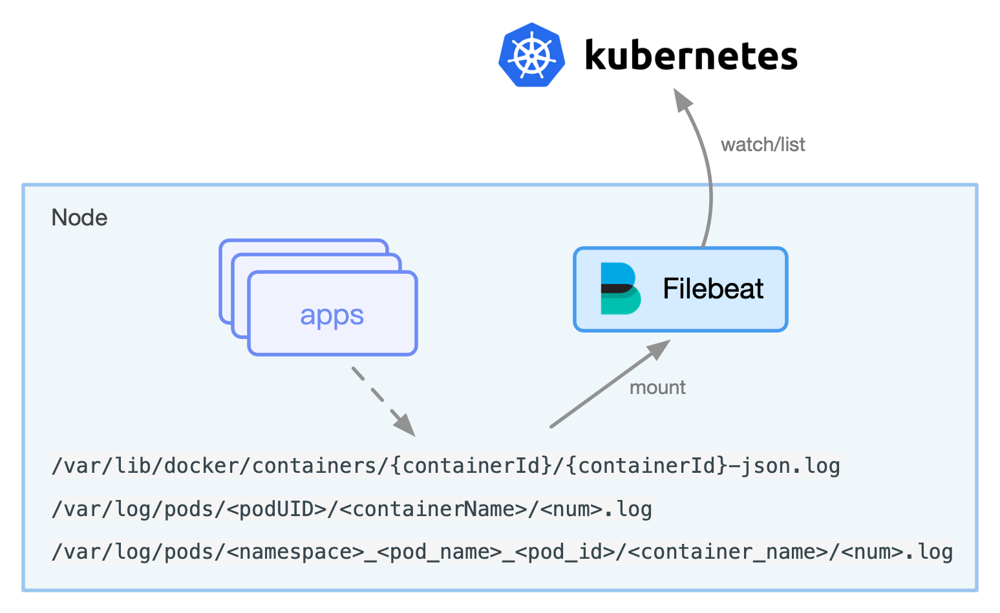
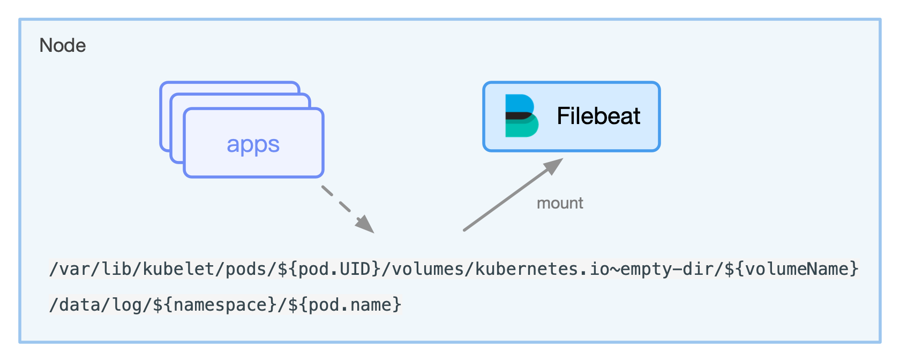
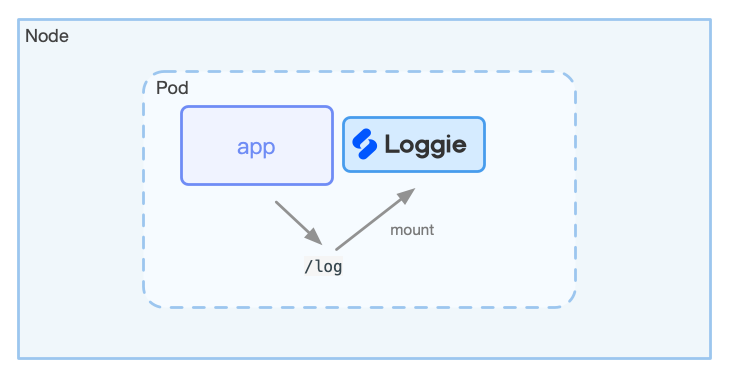

Log collection in Kubernetes¶
Cite
Compared with the traditional host log collection, in the Kubernetes cluster, there are some differences in collecting container logs, and the usage methods are also different. Here we list some common deployment and methods for reference.
1. From Host to Container¶
In the traditional era of using virtual/cloud/physical machines, business processes are deployed on fixed nodes, business logs are directly output to the host machine. People only manually (or use automated tools) deploy log collection agents on nodes, and add the Agent configuration. Then logs get collected.
In Kubernetes, it is not so simple.
- Dynamic migration: In Kubernetes clusters, Pods are actively or passively migrated, frequently destroyed and created. We cannot manually issue log collection configurations to each service as in the traditional way.
- Diversity of log storage: There are many different types of log storage for containers, such as stdout, hostPath, emptyDir, pv, etc.
- Kubernetes meta information: Log data will be centrally stored after collection. When querying logs, you need to retrieve and filter them based on dimensions such as namespace, pod, container, node, and even container environment variables and labels. At this time, Agent is required to collect these meta information and inject into the log by default.
The above are all requirements and pain points different from the traditional log collection and configuration method. The reason is that the traditional method is separated from Kubernetes, cannot perceive Kubernetes, and cannot integrate with Kubernetes.
2. Log form in Kubernetes¶
In order to collect container logs, let's first take a look at what solutions are generally available on the market.
2.1 Types of Logs Collected¶
First of all, it should be mentioned that based on the 12 elements of cloud native, it is recommended that the business container output logs to stdout instead of printing log files. Of course, the actual situation is that it is difficult for us to do this, and the reasons are probably:
- The business side needs to modify the log configuration.
- Some complex services classify log files, such as audit logs, access logs, etc., which are generally output as independent log files. Log collector needs to process differently according to different file classifications.
So under normal circumstances, we need to collect at the same time:
- standard output-stdout
- log file
2.2 Agent Deployment¶
To collect container logs, the Agent can be deployed in two ways:
- DaemonSet: Deploy an Agent per node.
- Sidecar: Add a Sidecar container to each Pod and run the Log Agent.
The advantages and disadvantages of both deployment methods are obvious:
- Resource occupancy: In containerized mode, a Node may run a lot of Pods. At this time, the method of DaemonSet is much smaller than that of Sidecar, and the more Pods on the node, the more more obvious.
- Intrusiveness: In the Sidecar method, the Agent needs to be injected into the business Pod. Regardless of whether there is a process of encapsulation, or the default injection by the Kubernetes webhook, the original deployment method is still changed.
- Stability: In most cases, log collector agent needs to ensure stability. The most important thing is not to affect the business. If the sidecar method is used, an exception or oom occurs in the agent, which can easily affect the business container. In addition, when there are many agents, it will cause certain hidden dangers to downstream services such as Kafka in terms of the number of connections.
- Isolation: In the case of DaemonSet, all the logs of the node share the same Agent, and Sidecar only collects business logs in the same Pod. So, the isolation of Sidecar will theoretically be better.
- Performance: Since Sidecar only collects logs in the Pod, the pressure is relatively small. In extreme cases, the probability of reaching the performance bottleneck of the Agent is much smaller than that of the DaemonSet method.
Tip
Under normal circumstances, DaemonSet is preferred to collect logs. If the log volume of a single Pod is particularly large, which exceeds the general Agent sending throughput, you can use Sidecar to collect logs for the Pod alone.
2.3 Collection Method¶
DaemonSet + Stdout¶
If the container runtime is docker, under normal circumstances, we can find the stdout log of the container in the docker path of the node Default should be /var/lib/docker/containers/{containerId}/{containerId}-json.log.
Before Kubernetes 1.14, kubelet would create a symlink /var/log/pods/<podUID>/<containerName>/<num>.log to the stdout file.
Like this:
root@master0:/var/log/pods# tree .
|-- 6687e53201c01e3fad31e7d72fbb92a6
| `-- kube-apiserver
| |-- 865.log -> /var/lib/docker/containers/3a35ae0a1d0b26455fbd9b267cd9d6ac3fbd3f0b12ee03b4b22b80dc5a1cde03/3a35ae0a1d0b26455fbd9b267cd9d6ac3fbd3f0b12ee03b4b22b80dc5a1cde03-json.log
| `-- 866.log -> /var/lib/docker/containers/15a6924f14fcbf15dd37d1c185c5b95154fa2c5f3de9513204b1066bbe474662/15a6924f14fcbf15dd37d1c185c5b95154fa2c5f3de9513204b1066bbe474662-json.log
|-- a1083c6d-3b12-11ea-9af1-fa163e28f309
| `-- kube-proxy
| |-- 3.log -> /var/lib/docker/containers/4b63b5a90a8f9ca6b6f20b49b5ab2564f92df21a5590f46de2a46b031e55c80e/4b63b5a90a8f9ca6b6f20b49b5ab2564f92df21a5590f46de2a46b031e55c80e-json.log
| `-- 4.log -> /var/lib/docker/containers/fc7c315d33935887ca3479a38cfca4cca66fad782b8a120c548ad0b9f0ff7207/fc7c315d33935887ca3479a38cfca4cca66fad782b8a120c548ad0b9f0ff7207-json.log
After Kubernetes version 1.14, it changed to /var/log/pods/<namespace>_<pod_name>_<pod_id>/<container_name>/<num>.log .
root@master-0:/var/log/pods# tree .
|-- kube-system_kube-apiserver-kind-control-plane_bd1c21fe1f0ef615e0b5e41299f1be61
| `-- kube-apiserver
| `-- 0.log
|-- kube-system_kube-proxy-gcrfq_f07260b8-6055-4c19-9491-4a825579528f
| `-- kube-proxy
| `-- 0.log
`-- loggie_loggie-csd4g_f1cc32e9-1002-4e64-bd58-fc6094394e06
`-- loggie
`-- 0.log
Therefore, for the Agent to collect standard output logs, it is to collect these log files on the node.
A simple and rude collection method is to use DaemonSet to deploy the log agent, mount /var/log/pods, and configure log file path similar with /var/log/pod/*/*.log to collect the standard output of all containers on the node.

But the limitation of this method includes:
- It is impossible to inject more meta information, such as the label/env of some pods. Before k8s 1.14 version, even the namespace/pod and other information cannot be obtained in the collected path.
- It is difficult to configure special configurations for a single service. For example, a file needs to use special multi-line log collection or log segmentation.
- A lot of unnecessary container logs will be collected, causing pressure on collection, transmission, and storage.
Of course, some current log agents such as Filebeat/Fluentd have targeted support. For example, information such as namespace/pod can be injected into the log, but most of the problems are still not solved.
Therefore, this method is only suitable for simple business scenarios, and it is difficult to meet other log requirements in the future.
DaemonSet + log file¶
If the Pod not only outputs stdout, but also log files, you need to consider mounting the log files to the node, and the Agent deployed with DaemonSet also needs to mount the same directory, otherwise the Agent cannot view it.
There are the following ways to mount the log path for the business Pod:
(1) emtpyDir
The life cycle of emtpyDir follows the Pod, and the logs stored in the Pod will disappear after the Pod is destroyed.
- Advantages: Simple to use, different Pods use their own emtpyDir, which has a certain degree of isolation.
- Disadvantages: If the log is not collected in time, there is a possibility of loss after the Pod is consumed.
The log files mounted using emptyDir generally have the following paths on the node:
/var/lib/kubelet/pods/${pod.UID}/volumes/kubernetes.io~empty-dir/${volumeName}
(2) hostPath
The lifecycle has nothing to do with Pods. If pods are migrated or destroyed, log files remain on existing disks.
- Advantages: The life cycle has nothing to do with the Pod. Even if the Pod is destroyed, the log files are still on the node disk. If the Agent does not collect logs, the log files can still be found.
- Disadvantages: There is no isolation by default, and the log path for mounting needs to be controlled. In addition, after the Pod is migrated, the residual log files accumulate for a long time and occupy the disk, and the quota of disk occupied by the log is not under control.
To resolve isolation and avoid multiple Pods printing logs to the same path and file, we need to use the subPathExpr field to construct the subPath directory name from environment variable get from the Downward API .
The VolumeSubpathEnvExpansion feature has been enabled by default since Kubernetes 1.15. Refer to feature-gates and using-subpath-expanded-environment。
An example using subPathExpr is shown below:
apiVersion: apps/v1
kind: Deployment
metadata:
labels:
app: nginx
name: nginx
namespace: default
spec:
selector:
matchLabels:
app: nginx
template:
metadata:
labels:
app: nginx
spec:
containers:
- env:
- name: POD_NAME
valueFrom:
fieldRef:
apiVersion: v1
fieldPath: metadata.name
- name: NAMESPACE
valueFrom:
fieldRef:
apiVersion: v1
fieldPath: metadata.namespace
image: nginx
name: nginx
resources: {}
volumeMounts:
- mountPath: /data/log
name: datalog
subPathExpr: $(NAMESPACE)/$(POD_NAME)
volumes:
- hostPath:
path: /data/log
type: ""
name: datalog
After creation, we can find a similar directory structure in /data/log under the node where we are located:
.
`-- default
|-- nginx-888dc6778-krfqr
`-- nginx-888dc6778-sw8vd
/data/log/$(NAMESPACE)/$(POD_NAME) path of the node.
(3) Pv
Pv access modes include:
- ReadWriteOnce（RWO）: read and write permissions, and can only be mounted by a single Node.
- ReadOnlyMany（ROX）: Read-only permission, allowing to be mounted by multiple Nodes.
- ReadWriteMany（RWX）: Read and write permission, allowing to be mounted by multiple Nodes.
For most businesses, stateless deployment is used, and the same Pv needs to be mounted. For some stateful services such as middleware, statefulset is generally used, and each Pod uses an independent Pv.
- Advantages: Logs in storage are not easy to lose;
- Disadvantages: There is a certain complexity of use and operation and maintenance; there are problems about isolation when multiple Pods share the same Pv; many log agents are not mature enough to collect log files on cloud disks, and there may be some hidden dangers;
Although the corresponding log files mounted by Pv can also be found on Node, the path on Node will be different depending on the underlying implementation of Pv.
At present, most log agents on the market are unaware of these mounting methods, so what you can do is similar to the above method of using stdout, that is, simply and rudely let the agent mount all the paths, and use the wildcard method to collect all logs. The limitations of usage are the same as for stdout.

In addition, some agents have certain support for collecting docker stdout. There are some usage variants, such as using webhook to inject a sidecar, reading the log file in the Pod, converting it to the stdout of the sidecar, and then collecting the stdout log of the sidecar. It will not be described in detail here.
(4) no mount
In many cases, users neglect to mount the log path volume. When connecting to an existing system, the business side is often unwilling to change it. Can the log files in the container be collected at this time?
Loggie tries to solve this problem (the function can be turned on by configuration), but this method still needs more tests in long-term production practice. Welcome to try it out, please refer to the next section for specific detials.
Sidecar + Stdout/Log File¶
If you need to use the sidecar method, you need to mount the log agent with the same log path at the same time, and the configuration file of the agent is generally mounted using ConfigMap.
For a comparison of of using Sidecar and DaemonSet, please refer to the above.

Summary Most popular open source agents only partially support container Stdout. For example, they support adding some K8s related meta-information when collecting, but do not support individual configuration for some Pods, and they do not support log file collection in the container. As a result, it is impossible to meet the needs in various complex business scenarios.
How Does Logie Solve These Problems?¶
I believe everyone has encountered or thought about the problems listed above. How does Loggie solve these problems? Please read the next section Collect Container Logs.